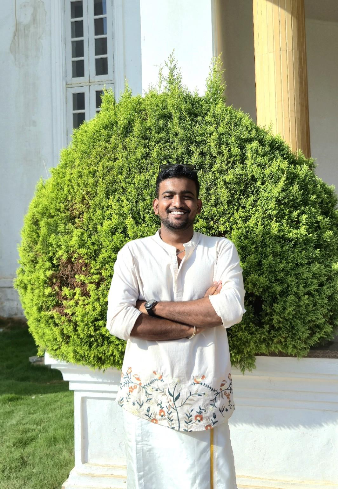

Electronics & Communication Engineering Student
Building innovative technology through curiosity, creativity, and engineering.
Hello! I'm Darshan Shivaraddi Tarikoppa, an Electronics & Communication Engineering student passionate about embedded systems, robotics and innovative technology.